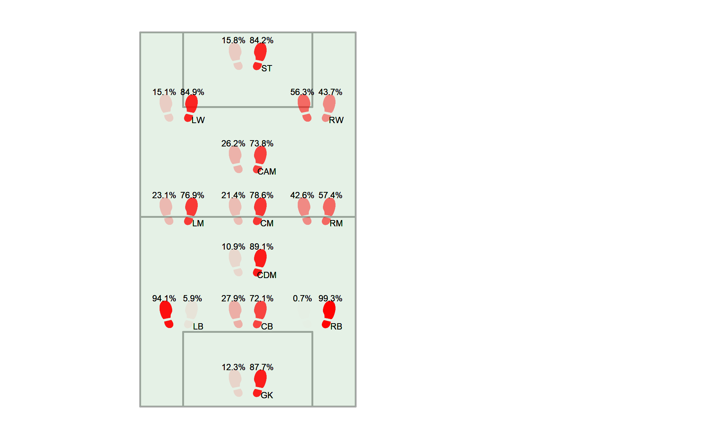
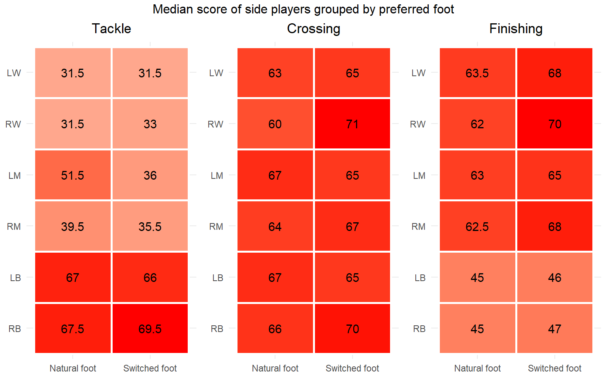

This section aims to explore the presence of right-footed and
left-footed in each field position.
In the dataset each player have their preferred_foot and
there is no player two-footed.
| Player | Team | Position | Preferred foot |
|---|---|---|---|
| Rodrigo Hernández Cascante | Manchester City | Central defensive midfielder | Right |
| Kevin De Bruyne | Manchester City | Center midfield | Right |
| Jude Bellingham | Real Madrid | Central attacking midfielder | Right |
| Kylian Mbappé | Real Madrid | Striker | Right |
| Vinícius José de Oliveira Júnior | Real Madrid | Left winger | Right |
| Harry Kane | FC Bayern München | Striker | Right |
## [1] "Total: 4146"| Player | Team | Position | Preferred foot |
|---|---|---|---|
| Erling Haaland | Manchester City | Striker | Left |
| Mohamed Salah | Liverpool | Right midfield | Left |
| Martin Ødegaard | Arsenal | Center midfield | Left |
| Thibaut Courtois | Real Madrid | Goalkeeper | Left |
| Bukayo Saka | Arsenal | Right winger | Left |
| Antoine Griezmann | Atlético Madrid | Striker | Left |
## [1] "Total: 1461"
It is notable that most players are right-footed, hence the high prevalence of right-footed players in all positions. However, some behaviors stand out when analyzing the image above: The defensive players who play on the wings have as their predominant foot the one that reflects the side they play on. Right backs are mostly right-footed and left backs are mostly left-footed. As the players on the wings have more offensive participation, their predominant foot tends to change, especially for those who play on the left side of the field, where left wingers and left midfielders are predominantly right-footed. On the right side, there is a similar number of right-footed and left-footed players, with a slight predominance of left-footed players as wingers.
For defensive situations, the hypothesis raised is that the defensive wingers actually defend the wings of the field using their predominant foot to tackle attackers who seek deep plays. In offensive actions, the suspicion is that the defense players use deep plays as an attacking action and seek the cross, while for the midfielders and wingers the suspicion is that they use their dominant foot for finishing, taking the ball to the inside of the field. The proposed surveys are nothing more than suggestions and there is NO evidence to prove such behaviors.
This session will analyze the defensive attribute “tackle” (average
of sliding tackle” and “standing tackle”) and attacking attributes
“crossing” and “finishing”. Only players on the side of the field will
be analyzed, namely right/left back (RB,
LB), right/left midfielders (RM,
LM) and right/left wingers (RW,
LW). Players will also be separated into subgroups
according to their position and dominant foot, as explained below:
- Natural foot: players with “natural foot” are those
whose dominant foot is the one that reflects their side of the field.
Left-footed players who play on the left side and right-footed players
who play on the right side will be considered “natural foot”
players;
- Switched foot: players with “switched foot” are those
whose dominant foot is the opposite of their side of play. Left-footed
players who play on the right side and right-footed players who play on
the left side will be considered “switched foot” players.
| Presence of natural/switched foot players in positions | ||||
| Position | Natural foot | Switched foot | Natural foot (%) | Switched foot (%) |
|---|---|---|---|---|
| RB | 431 | 3 | 99.31 | 0.69 |
| LB | 402 | 25 | 94.15 | 5.85 |
| RM | 186 | 138 | 57.41 | 42.59 |
| LM | 72 | 240 | 23.08 | 76.92 |
| RW | 55 | 71 | 43.65 | 56.35 |
| LW | 24 | 135 | 15.09 | 84.91 |

In the defensive attribute “tackle”, as expected, defensive players have a better score. In addition, the behavior of left-footed left-midfielders stands out, as they perform better than right-footed players in this position.
Regarding “crossing”, there are no major differences between natural foot and switched foot players, with only left-footed right-wingers showing a slightly greater positive difference in relation to left-footed players.
Regarding the “finishing” attribute, there are also no major differences between natural foot and switched foot players, however, for all positions analyzed, switched foot players have slightly better scores.